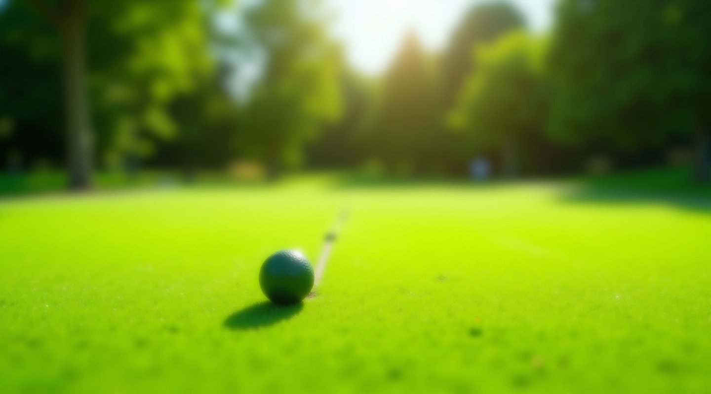
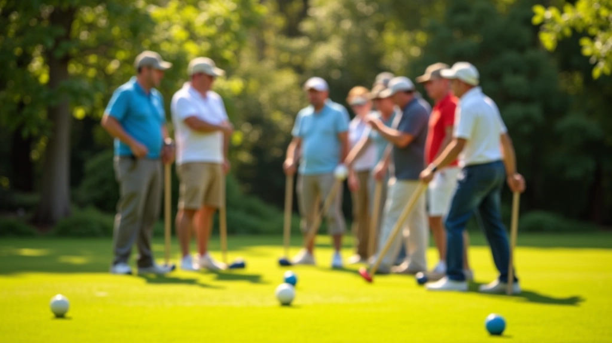
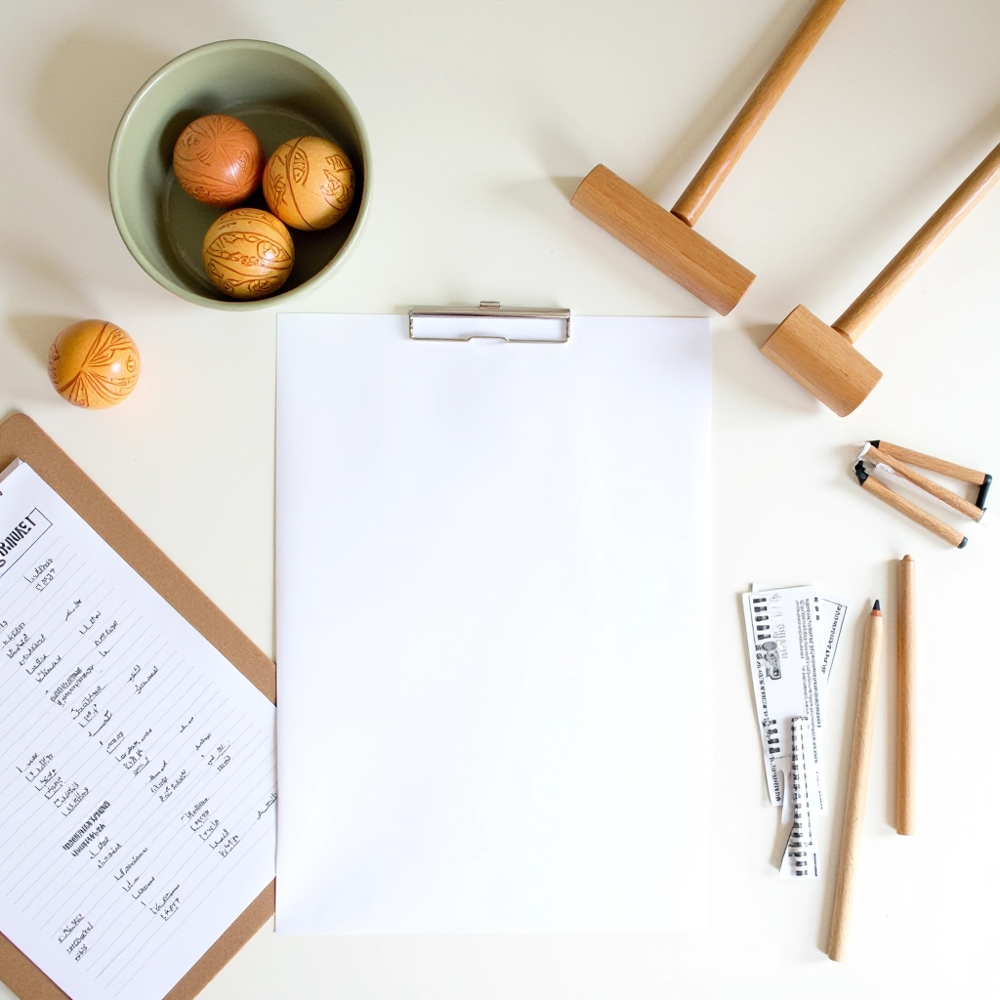
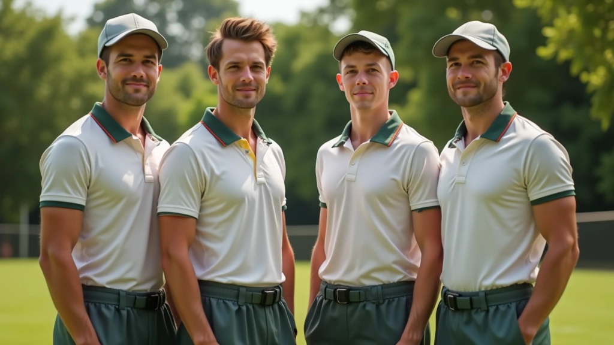
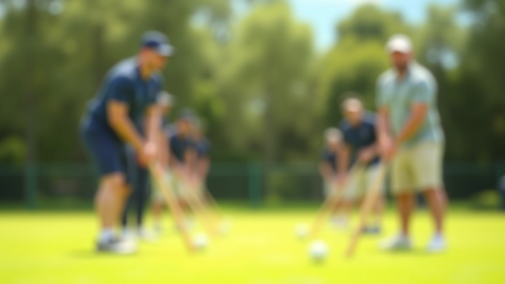
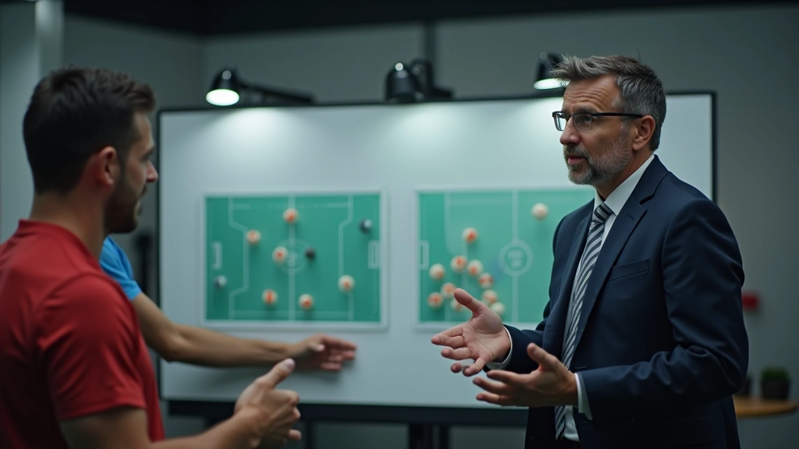
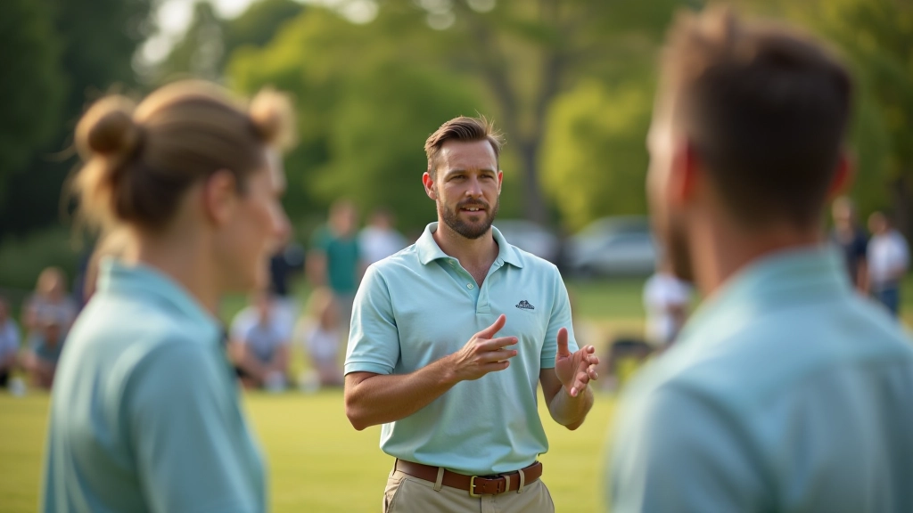

نظام المباراة الفردية: القواعس الأساسية
شرح مفصل لقواعد المباراة الفردية وكيفية حساب النقاط والفوز في المباراة. يشمل الأساسيات والحالات الخاصة.
اقرأ المقالكيفية تنظيم بطولة فريق احترافية. نصائح عملية عن اختيار الفريق والتدريب والتكتيكات الفائزة.
سبتمبر 2026


المؤلف
فريق التحرير والمراجعة
كتبه فريق ملعب الكروكيه التحريري، متخصص في تقديم شروحات عملية وسهلة الفهم لأنظمة البطولات.
بطولات الفريق تختلف تماماً عن المباريات الفردية. هنا، ما يهم هو التنسيق بين لاعبي الفريق وقدرتهم على العمل معاً لتحقيق الهدف. ليس كل لاعب ماهر يستطيع أن يكون لاعب فريق فعّال — يحتاج إلى فهم عميق للاستراتيجية والقدرة على التكيف مع زملائه.
في هذا الدليل، سنغطي كل ما تحتاجه لتنظيم بطولة فريق احترافية. من اختيار اللاعبين الصحيحين، إلى التدريبات المخصصة، وصولاً إلى التكتيكات التي تفوز بالبطولات.
أول خطوة في بناء فريق ناجح هي اختيار اللاعبين المناسبين. لا تختار فقط أفضل 4 لاعبين فرديين — هذا فخ شائع جداً.
الفريق الناجح يحتاج توازن. تحتاج إلى:
الكيمياء بين اللاعبين مهمة جداً. اختبر اللاعبين معاً قبل البطولة — كيف يتواصلون؟ هل يثقون ببعضهم؟ هل يستطيعون تقبل النقد البناء؟


التدريب الفردي مختلف تماماً عن تدريب الفريق. يجب أن تركز على التنسيق والاتصال.
اجعل التدريبات تحاكي الظروف الحقيقية للبطولة. لا تدرب على نفس الملعب دائماً — اختلف الظروف. جرب التدريب على ملاعب مختلفة، أوقات مختلفة، حتى درجات حرارة مختلفة إن أمكن.
نصيحة مهمة: خصص 40% من وقت التدريب للعمل على التمريرات والحركات المشتركة. التنسيق هو الفارق بين الفريق الجيد والفريق الرابح.
لا تنسَ الجانب النفسي. تدرب الفريق على التعامل مع الضغط. العب مباريات تدريبية ضد فرق قوية. اجعلهم يشعرون بالتوتر والضغط قبل البطولة الحقيقية.
كل بطولة لها تحديات مختلفة. قد تواجه فريقاً هجومياً قوياً، أو فريقاً دفاعياً محكماً. التكتيك الصحيح يعتمد على نقاط قوة فريقك والخصم.
إذا كان فريقك قوياً في الهجوم، استخدم هذا. لكن لا تهاجم بعشوائية. خطط كل حركة. من سيبدأ؟ ما الترتيب الأمثل للاعبين؟ كيف ستستجيب إذا انكسر الهجوم؟
إذا كان الخصم قوياً جداً، قد تحتاج إلى الدفاع أولاً. ليس الدفاع الممل — بل الدفاع الذي يستنزف طاقة الخصم ويجبره على الأخطاء.
أفضل فريق هو الفريق الذي يستطيع تغيير تكتيكاته أثناء المباراة. راقب الخصم، افهم نقاط ضعفهم، وكيف يفكرون.


الآن وقد غطينا الأساسيات، إليك بعض النصائح الإضافية التي تحدث الفرق الفعلي:
1. الاتصال المستمر — تحدث مع زملائك طوال الوقت. شارك الملاحظات. "انتبه للزاوية اليسرى"، "غير الاستراتيجية"، "أنت تفعل رائع". هذا يبني الثقة.
2. الراحة العقلية — بعد خسارة نقطة مهمة، قد يشعر الفريق باليأس. قائد الفريق يجب أن يحافظ على المعنويات. ركز على ما يجب فعله بعد، لا على ما حدث للتو.
3. الملاحظة والتكيف — راقب كيف يلعب الخصم. هل لهم نمط معين؟ هل يضعفون تحت الضغط؟ استخدم هذه المعلومات لتغيير تكتيكك.
4. الروتين ما قبل المباراة — وجود روتين ثابت يهدئ الأعصاب. تمرين خفيف، تنفس عميق، كلام تحفيزي. الروتين يقلل التوتر.
بطولات الفريق ليست فقط عن المهارات الفردية. يتعلق الأمر بالعمل الجماعي والثقة والتنسيق. اختر اللاعبين الصحيحين، درّبهم معاً، وطوّر استراتيجيات قوية.
تذكر: الفريق الذي يتواصل بشكل جيد، والذي يثق ببعضه، والذي يتكيف بسرعة مع التغييرات — هذا الفريق يفوز. ليس دائماً الفريق ذو أفضل لاعب فردي، بل الفريق الذي يعمل كوحدة واحدة.
ابدأ الآن. جمّع فريقك، ضع خطة تدريب، واختبر التكتيكات. كل بطولة ستعلمك درساً جديداً. كل هزيمة فرصة للتحسن. هذا هو جمال لعبة الكروكيه الجماعية.
هذا الدليل يقدم معلومات تعليمية عامة عن تنظيم بطولات الكروكيه للفرق. النصائح والاستراتيجيات المذكورة هنا مبنية على الخبرات العملية والممارسات الشائعة في اللعبة. كل فريق فريد، وقد تحتاج إلى تكييف هذه الاستراتيجيات حسب ظروفك الخاصة. نوصي باستشارة مدربين ذوي خبرة قبل تطبيق أي استراتيجية جديدة على فريقك.